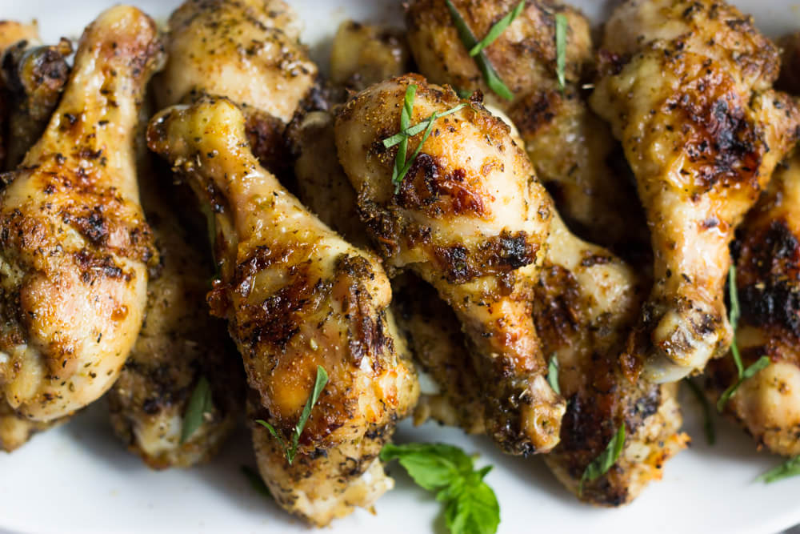

Herb Roasted Chicken

Generic, dry herb roasted chicken parts, just like your lazy parents used to make!
Fun fact, chickens love being roasted!
Ingredients:
- 2lbs Chicken Drumsticks
- 1 Tbsp Olive Oil
- 2 tsp Garlic Powder
- 1 tsp Onion Powder
- 1/2 tsp Dried Basil
- 1/4 tsp Cayenne Pepper
- 1 tsp Kosher Salt
- Fresh Black Pepper, to taste
Cooking Instructions:
- Preheat the oven to 375 degrees F. Line a rimmed baking sheet with parchment paper. If using aluminum foil, lightly coat with non-stick spray.
- In a small bowl, mix together all of the spices and set aside.
- Place the chicken drumsticks into a large bowl. Make sure they have already been pat dried with a paper towel. Add olive oil and using your hands, toss to coat.
- Sprinkle in the seasoning mix and using your hands again, toss the drumsticks making sure each piece is thoroughly coated with the seasoning.
- Arrange the drumsticks on the prepared baking sheet and roast for 30 minutes. Then flip the drumsticks and roast for additional 25-30 minutes. If desired, broil for 2-3 minutes for extra crispy skin.